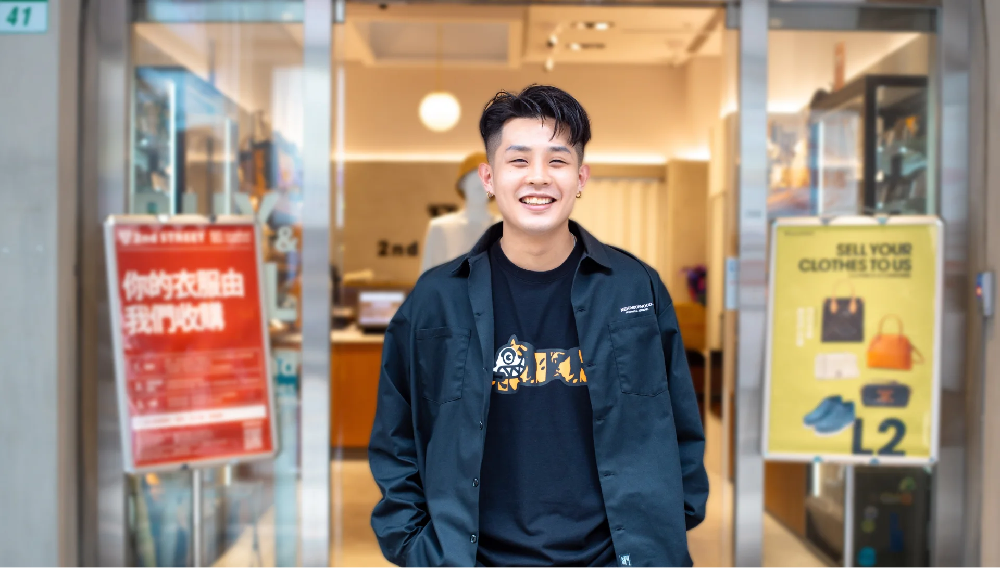
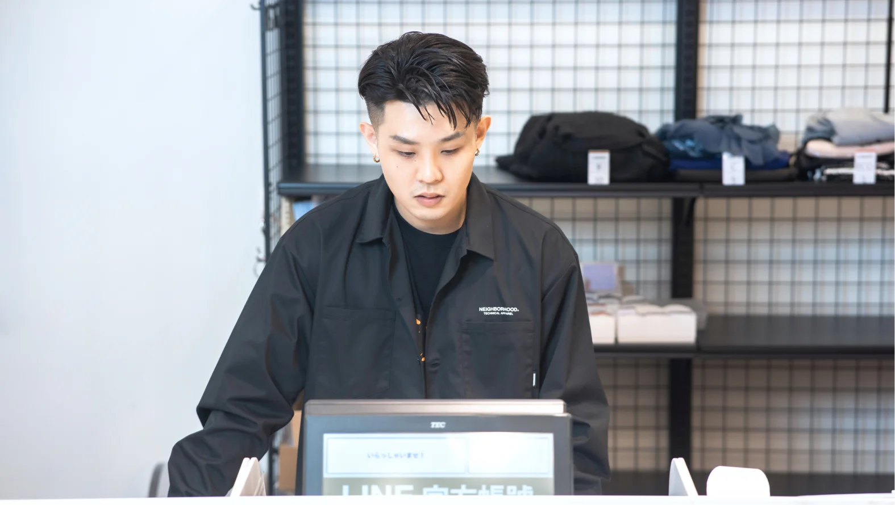
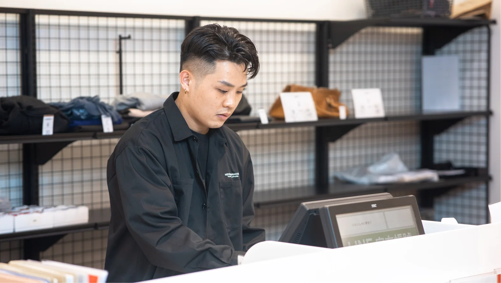

Staff Interview
在您目前的職位上，哪一個具體瞬間讓您感到最充實，並確信這份工作很有意義？
對我而言，最有成就感的瞬間，並不只是業績達成的當下，而是看見REUSE文化開始影響更多的人，讓大眾看見商品循環所帶來的無限可能。能夠透過事業本身為社會做出實質貢獻，並引領更多人理解REUSE的深層價值，進而翻轉對消費與資源循環的認知——這是一件極具意義的事，也是我當初選擇這份工作、至今仍熱此不疲的原因。

Staff Interview
對我而言，最有成就感的瞬間，並不只是業績達成的當下，而是看見REUSE文化開始影響更多的人，讓大眾看見商品循環所帶來的無限可能。能夠透過事業本身為社會做出實質貢獻，並引領更多人理解REUSE的深層價值，進而翻轉對消費與資源循環的認知——這是一件極具意義的事，也是我當初選擇這份工作、至今仍熱此不疲的原因。
從上一職等晉升至今，我認為自己最大的思維轉變，是對公司理念「Be Customer」有了更深層的體悟。
過去的我，認為只要提供良好的服務、站在顧客角度思考，並持續創造業績，就是所謂的Be Customer。
但直到跨足海外市場，身處全新環境的考驗後，我才真正理解這句話背後的深意——「唯有被顧客持續選擇，我們才有存在的價值。」
如果無法真正走入現場、傾聽並理解顧客的真切需求，那麼生意本身便無法成立。
也因此，我開始更嚴格地要求自己從顧客的視角出發，而不只是從店鋪或管理者的本位做判斷。唯有細緻地觀察，不斷探尋「顧客真正需要的是什麼」並勇於嘗試，才能找到突破口。
這段海外市場的洗禮，讓我更加確信：生意的答案，永遠掌握在顧客手中。

作為資深夥伴，我認為將REUSE理念融入工作最重要的關鍵，在於先實踐「Be Customer」。
許多人會認為，在海外推廣REUSE最大的挑戰來自於文化差異；但對我而言，比起文化隔閡，更核心的關鍵在於我們能否真正洞察顧客的需求。
因為只有設身處地站在顧客的角度思考，才能看清他們選擇並使用我們服務的初衷，以及他們真正重視的價值。
當我們能深刻共鳴這些需求時，REUSE的魅力自然能夠跨越界線，傳遞出去。
透過持續的觀察與傾聽，並將這樣的思維深化至整個團隊，我們才能讓 REUSE 不單只是留在口號上的公司理念，而是真正轉化為被顧客認同且堅定選擇的品牌價值。
我始終相信，當團隊真正內化了「Be Customer」的精神，就能徹底跨越市場與文化的藩籬，將永續循環的種子散播給更多人。

2nd STREET不單只是提供一份職缺，更是一個賦予挑戰契機、引領人們成長並開拓視野，進而蛻變自我的舞台。
不要將目光僅僅停留在「完成眼前的工作」，而是要持續思索：自己能為團隊、店鋪，乃至於整間公司，創造什麼樣的獨特價值？
不要畏懼失敗，更不要安於現狀。唯有勇敢跨出舒適圈、迎向挑戰，才能看見更廣闊的風景與無限可能。